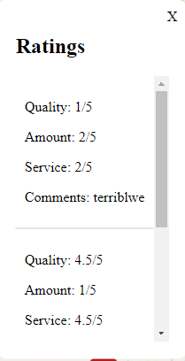
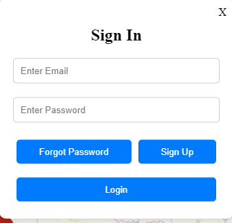
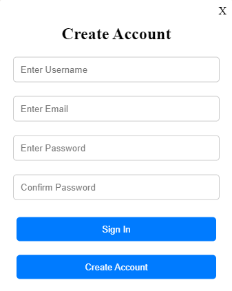
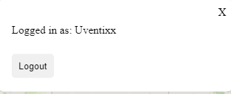

FifthDevBlogChipotle
Chipotle Social Media Site
It has been a while since I wrote one of these, but a lot of progress has been made on the site since the last post! I finally got the PostgreSQL database set up and got a connection through code using Node/ExpressJS. I then proceeded to test adding reviews to the database and seeing what information would be necessary to store in order to pass information back to the website for viewing.
After I proved to myself that the data that I was storing was good enough, I adjusted the database to have three tables: users, locations, and reviews. This way, I could connect each user to their reviews, as well as have each review be attached to a specific location for viewing! I then started fetching reviews for each location and having them viewable through the view ratings button on each location. This is where I originally stopped a few days ago to get some rest.
Then, today I started work on user login and made it so a user can create, login, and logout of their accounts. This is the building block for the social media aspect of the site. I intend to make it so you can view a reviewers account and see all of their reviews. I also learned how to use localstorage instead of cookies to store data about the user in order to maintain state even when a user would leave the website.
I think I can finally say that we have all of the building blocks built for the MVP of the web application! Map of all locations, review creation, review viewing, and account creation/use. Now we can move onto making it look better while also adding extra functionality on top. Feeling motivated after finally fixing the database issues



